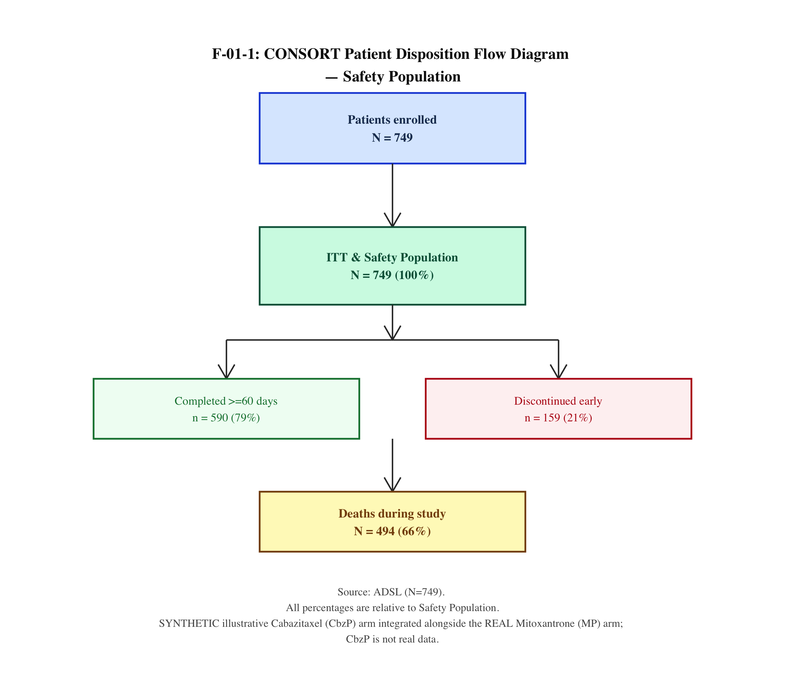
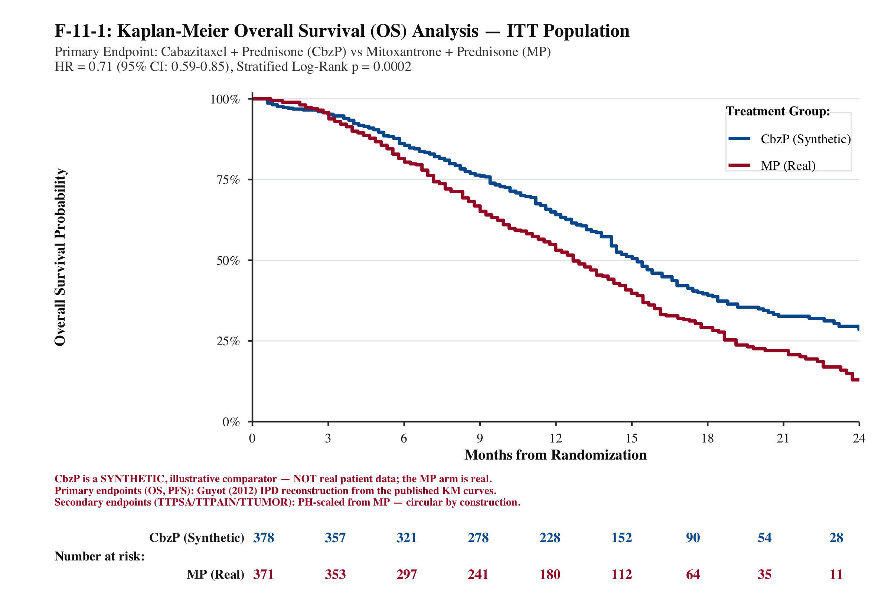
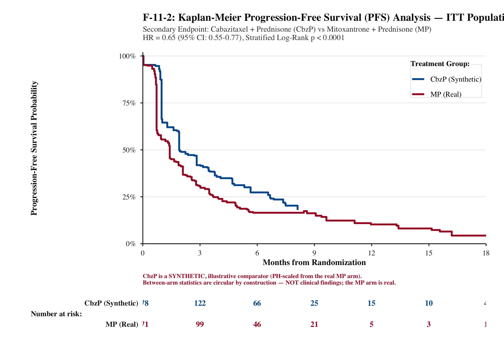
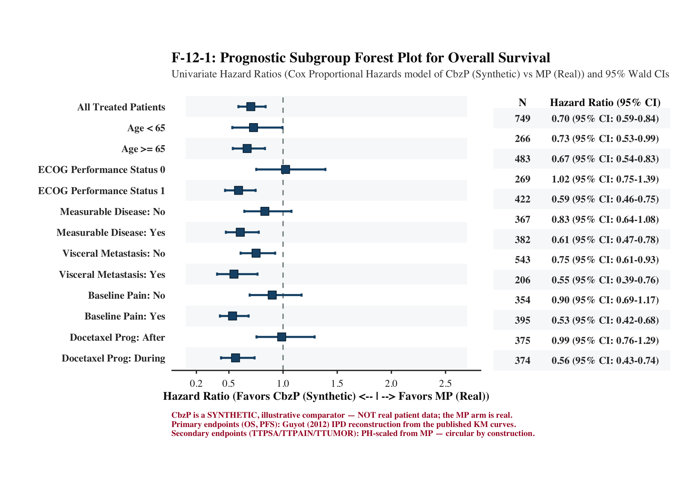
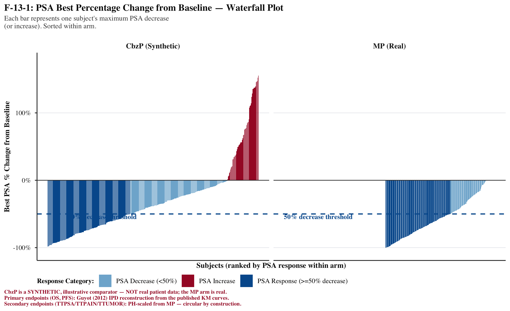
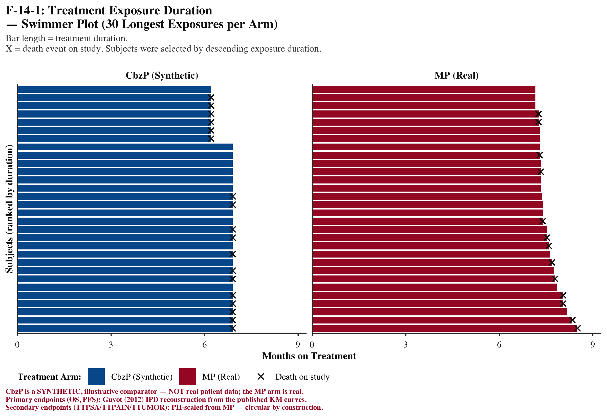
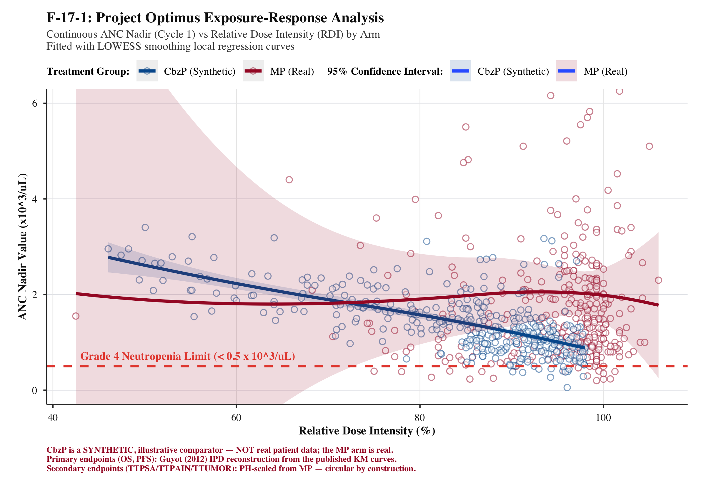

Figures (7)
Click any figure to enlarge







Tables (3)
T-11
Efficacy Summary — Kaplan–Meier & Cox PH
| Endpoint | CbzP (N=378) | MP (N=371) | HR (95% CI) | p-value |
|---|---|---|---|---|
| Overall Survival (primary) | 15.1 mo | 12.7 mo | 0.70 (0.59–0.83) | 0.0004 |
| Progression-Free Survival | — | — | 0.74 (0.64–0.86) | 0.0012 |
| Time to PSA Progression | 6.4 mo | 2.1 mo | 0.75 (0.63–0.90) | 0.0001 |
| Time to Tumour Progression | 8.8 mo | 2.8 mo | 0.61 (0.49–0.76) | 0.0001 |
T-20
Adverse Event Summary — Safety Population (MP arm, real data)
| Category | MP (N=371) | % |
|---|---|---|
| Any TEAE | 328 | 88% |
| Any Grade ≥3 TEAE | 147 | 40% |
| Any Serious TEAE (SAE) | 78 | 21% |
| Grade ≥3 TEAEs by System Organ Class (Top 10) | ||
|---|---|---|
| SOC | n | % |
| Blood & Lymphatic System Disorders | 39 | 11% |
| General Disorders & Admin Site Conditions | 36 | 10% |
| Musculoskeletal & Connective Tissue Disorders | 35 | 9% |
| Infections & Infestations | 19 | 5% |
| Nervous System Disorders | 14 | 4% |
| Respiratory, Thoracic & Mediastinal Disorders | 13 | 4% |
| Metabolism & Nutrition Disorders | 8 | 2% |
| Gastrointestinal Disorders | 6 | 2% |
| Investigations | 5 | 1% |
| Skin & Subcutaneous Tissue Disorders | 1 | <1% |
T-21
Lab Toxicity Shift — Baseline to Worst Post-Baseline CTCAE Grade (MP arm, real data)
ANC / Neutrophils (n=371)
| Baseline ↓ / Worst → | Gr 0 | Gr 1 | Gr 2 | Gr 3 | Gr 4 |
|---|---|---|---|---|---|
| Grade 0 | 143 | 59 | 100 | 126 | 24 |
| Grade 1 | 1 | 0 | 0 | 3 | 0 |
| Grade 2 | 0 | 0 | 0 | 0 | 1 |
Haemoglobin (n=371)
| Baseline ↓ / Worst → | Gr 0 | Gr 1 | Gr 2 | Gr 3 | Gr 4 |
|---|---|---|---|---|---|
| Grade 0 | 135 | 89 | 5 | 0 | 1 |
| Grade 1 | 5 | 133 | 67 | 6 | 0 |
| Grade 2 | 0 | 0 | 12 | 1 | 0 |
| Grade 3 | 0 | 0 | 1 | 1 | 0 |
Platelets (n=371)
| Baseline ↓ / Worst → | Gr 0 | Gr 1 | Gr 2 | Gr 3 | Gr 4 |
|---|---|---|---|---|---|
| Grade 0 | 341 | 85 | 3 | 0 | 3 |
| Grade 1 | 2 | 18 | 2 | 2 | 0 |
Cell colour: ■ stable/improved · ■ Grade 1–2 shift · ■ Grade 3–4 worsening